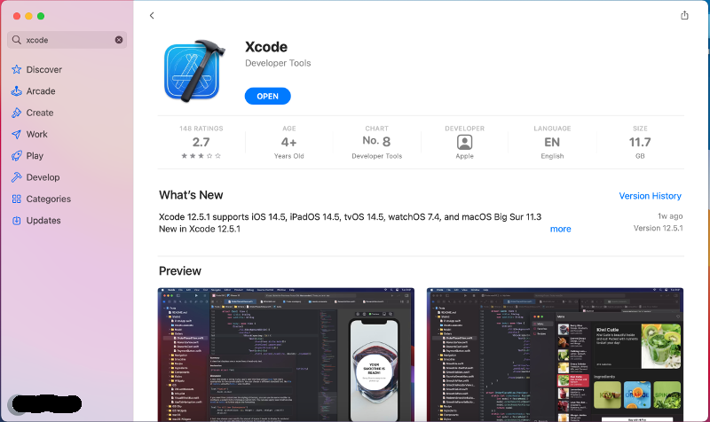

The Absolute Beginner's Guide to Installing and Using Meson
This page is meant for people who are new to using Meson and possibly even to compiling C and/or C++ code in general. It is meant to contain one simple way of getting your build environment up and running. If you are more experienced and have your own preferred way of installing and using development software, feel free to use that instead. This guide only deals with Linux, Windows and macOS platforms. If you use some other platform, such as one of the BSDs, you probably already know how to install development tools on it (probably better than we do, even).
There are three phases to getting a development environment running.
- Installing a compiler toolchain
- Installing Meson
- Creating a project and building it
Installing a compiler toolchain
Linux
All Linux distributions provide easy access to development tools. Typically you need to open a terminal and execute one command, which depends on your distro.
- Debian, Ubuntu and derivatives:
sudo apt install build-essential - Fedora, Centos, RHEL and derivatives:
sudo dnf install gcc-c++ - Arch:
sudo pacman -S gcc
Windows
The most common development toolchain on Windows is Visual Studio, which can be downloaded from the Visual Studio web site. Select the Community version unless you have bought a license.
Download the installer and run it. When you are given a list of things to install, select Desktop development with C++. This installs both a C and a C++ compiler.
Once the installer finishes the compiler toolchain is ready to use.
macOS
On macOS the development toolchain must be installed via the Mac app store. Search for an app called XCode and install it.

Note: Installing XCode is not sufficient by itself. You also need to start XCode' GUI application once. This will make XCode download and install more files that are needed for compilation.
Installing Meson
Linux
Installing Meson is just as simple as installing the compiler toolchain.
- Debian, Ubuntu and derivatives:
sudo apt install meson ninja-build - Fedora, Centos, RHEL and derivatives:
sudo dnf install meson ninja-build - Arch:
sudo pacman -S meson
Windows
Meson provides a standard Windows .msi installer that can be
downloaded from the Releases
page.
Download and run it to install all the necessary bits. You can verify that your installation is working by running the Visual Studio developer tools command prompt that can be found in the start menu.
You should be able to run both meson and ninja and query their
versions.
macOS
With Homebrew
brew install meson ninja
Without Homebrew
Start by downloading the installation package from the Releases page.
Double click the downloaded installer to start. If you are running a new macOS version, it might refuse to run the application with the following error message:
This can be fixed by starting System Preferences, selecting the Security and Privacy entry. At the bottom it shows the blocked app and you can enable it by clicking on the "Open anyway" button.
Now the installer should start. If not, double click on the downloaded installer file again.
Once the installation is finished you can verify that the system is working via the terminal app.
Running Meson
Start a terminal application. On Windows you have to use the Visual Studio Developer Tools Command Prompt as discussed above, because the compilers are only available in that terminal. You also need to change into your home directory (Linux and macOS terminals start in the home directory by default).
cd \users\username
Create a new directory to hold your project.
mkdir testproject
cd testproject
Use Meson to create and build a new sample project.
meson init --name testproject --build
This will create a project skeleton for you and compile it. The result
is put in the build subdirectory and can be run directly from there.
build/testproject
The project is now ready for development. You can edit the code with
any editor and it is rebuilt by going in the build subdirectory and
executing the meson compile command. If your version of Meson is too
old, you can compile the project by running the command ninja
instead.
The results of the search are